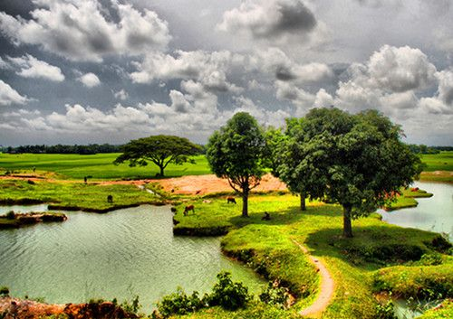

|  | |
|
|
Bangladesh, country of south-central Asia, located in the delta of the Padma (Ganges [Ganga]) and Jamuna (Brahmaputra) rivers in the northeastern part of the Indian subcontinent. The riverine country of Bangladesh (“Land of the Bengals”) is one of the most densely populated countries in the world, and its people are predominantly Muslim.
Bangladesh is bordered by the Indian states of West Bengal to the west and north, Assam to the north, Meghalaya to the north and northeast, and Tripura and Mizoram to the east. To the southeast, it shares a boundary with Myanmar (Burma). The southern part of Bangladesh opens into the Bay of Bengal.
Bangladesh is the most densely populated country of the world with a total population of 150 million where per capita income is USD $ 540, along with Economic growth of 6%. The country is primarily depending on agriculture but gradually transforming industrial structure. The major components of the industrial sectors are Textile, Chemical, Pharmaceuticals, Leather, Agro Products, Ceramics, Frozen foods, Plastics etc. The Sundarbans are the largest coastal mangrove belt in the world, extending 80km (50mi) into the Bangladeshi locality from the coast. The Sundarbans cover an area of 38,500 sq km, of which about one-third is covered in water. Since 1966 the Sundarbans have been a wildlife sanctuary, and it is estimated that there are now 400 Royal Bengal tigers and about 30,000 spotted deer in the area. Over 120 species of fish and over 260 species of birds have been recorded in the Sundarbans. the largest mangrove forest & the royal Bengal tiger in Sundarbans. Also you can see the ancient archaeological site. Its beauty lies in its unique natural surroundings. It is also the land for the conventional holiday makers who desire to rest or roam around at will to refresh their mind and feast their eyes with the rich treasure that nature has so lovingly bequeathed. So it’s a place where you can get both your business & enjoyable trip to see the beautiful Bangladesh.
Bangladesh is inhabited by hundreds of species of birds. Common house crows are found everywhere, and their cries are detested by many people of Bangladesh, who regard crows as bad omen. Bulbuls, magpie-robins, and a wide variety of warblers are also found; some are migrants that appear only in winter. Several kinds of flycatchers occur, and there are mynah birds of several kinds. Other species of birds include various game birds, parakeets, cuckoos, hawks, owls, kingfishers, hornbills, hoopoes, woodpeckers, and vultures. Among the eagles, the crested serpent eagle and the ring-tailed fishing eagle are the most common. There also are an array of water birds, including herons, storks, ducks, and wild geese.
| SUN | MON | Tus | Wed |
| Jan | Feb | March | April |
| Ban | AFG | Pak | ENG |